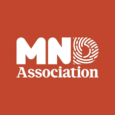
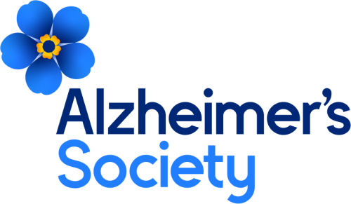
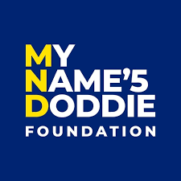
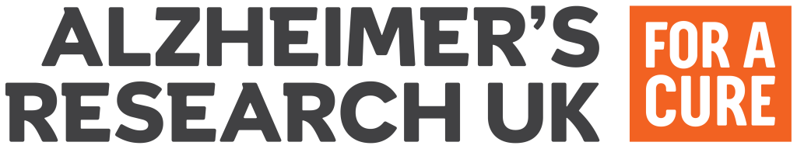
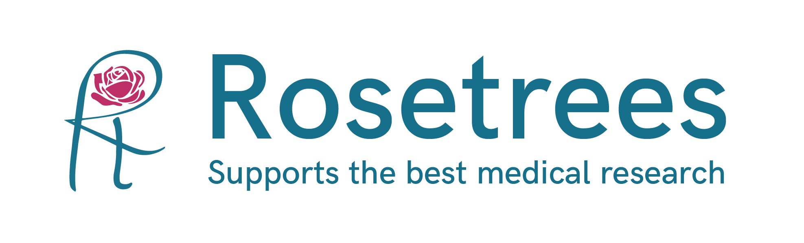
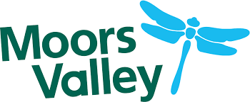
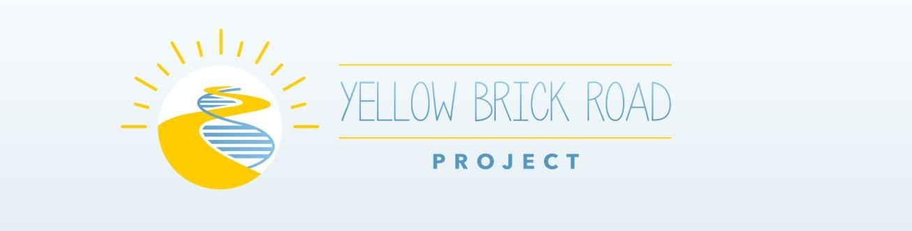
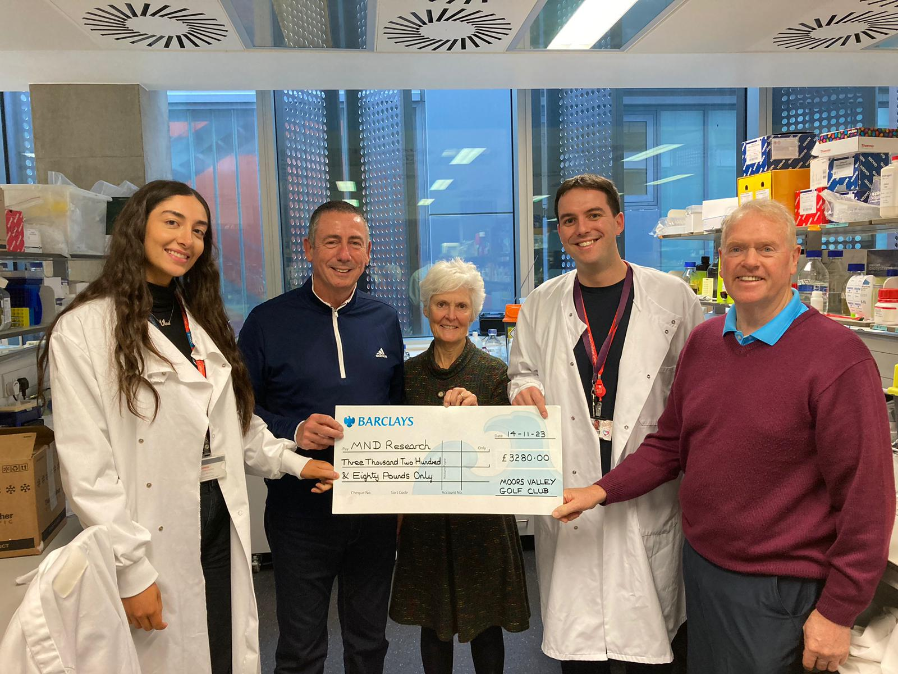

Supporters & Partners
Research made possible by generous support and partnership
White Lab Neuro is grateful for the charities, foundations, research partners and community organisations whose support helps make our work possible.
Building an independent research programme depends on much more than ideas alone. It depends on sustained support, shared ambition and a wider community of organisations and individuals who believe in the value of research.
We are deeply grateful to the funders, supporters, partners and community organisations whose backing helps White Lab Neuro pursue research in RNA biology, neurodegeneration, human stem-cell models and related disorders of the nervous system.
Current supporters



Previous supporters


Partners and community support



Community support in action
We are especially grateful to Moores Valley Golf Club, whose fundraising support helped White Lab generate early preliminary data that contributed towards larger grant and fellowship applications.
During their visit to the lab, members of the club toured our research environment, heard more about the science, and formally presented their donation. Support of this kind plays a meaningful role in helping early research ideas grow into larger funded programmes.
With thanks
White Lab Neuro is sincerely grateful for the support, partnership and shared commitment that help make this research possible.